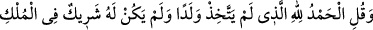
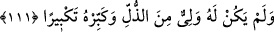

El üstünde el var… nereye kadar bu.
Ta son erişilecek menzile, ta Allah’a kadar!
Çünkü O, öyle bir denizdir ki ne dibi var, ne kıyısı!
Bütün denizler, ona karşı sele benzer.
“Namazında” yâni Mescid-i Haram’da namazındaki kırâatta müşriklerin işiteceği
şekilde “yüksek sesle okuma!” Bu durum onların Kur’ân’a, O’nu indirene ve O’nu
getirene küfretmelerine sebep olur. “Onda sesini fazla da kısma;” arkanda namaz kılan
mü’minlerin işitemeyeceği ölçüde sesini de kısma “ikisinin arası bir yol tut.” Gizli ile
âşikâr arasında orta bil yol seç. İşlerin en iyisi orta halli olanıdır. Bunun ‘yol’ diye
ifâde edilmesi, yönelen kimselerin yöneldiği ve uyan kimselerin imam saydığı;
kendilerini maksadlarına ulaştıran bir husus olduğu içindir.
Rivâyete göre Ebû Bekir (r.a.) Kur’an okurken gizli okur ve: “Rabbime gizli olarak
duâ ediyorum, O muhakkak benim hâcetimi bilir.” derdi. Ömer (r.a.) ise açıktan/cehren
okur ve: “Şeytanı uzaklaştırıyor ve uyuklayanı uyandırıyorum.” derdi. Bu âyet nâzil
olunca Rasûlullah (s.a.) Hz. Ebû Bekir’e okurken sesini biraz yükseltmesini, Hz.
Ömer’e de sesini biraz kısmasını emretti.[154]
111. Çocuk edinmeyen, hâkimiyette ortağı bulunmayan, âcizlikten ötürü bir dosta
da ihtiyacı olmayan Allah’a hamd ederim” de ve tekbir getirerek O’nun şanını
yücelt!
“Çocuk edinmeyen,” Çünkü doğurmak, başkalarının değil, cisimlerin sıfatlarındandır.
Bu âyet ‘Uzeyr Allah’ın oğludur’ diyen yahudileri, ‘Îsâ Allah’ın oğludur’ diyen
hristiyanları ve ‘Melekler Allah’ın kızlarıdır’ diyen Müdlicoğulları’nı reddetmektedir.
Allah bu bâtıl iddiâlardan yüce ve münezzehtir. “Hâkimiyette” âlemin mülkünde, yâni
ulûhiyyette “ortağı bulunmayan,” çünkü herkes onun kuludur. Kul ise efendisinin
mülkünde ortak olamaz. Burada da birden çok ilâh olduğunu söyleyen
senevîler/dualistler reddedilmektedir.
Mesnevî’de der ki:
Mülk ve devlette tektir, eşi yok.
Kullarına ondan başka başbuğ yoktur.
Halkına ondan başka kimse sahip değildir.
Helâk olandan başka kimse ona şeriklik dâvâsına kalkışamaz.